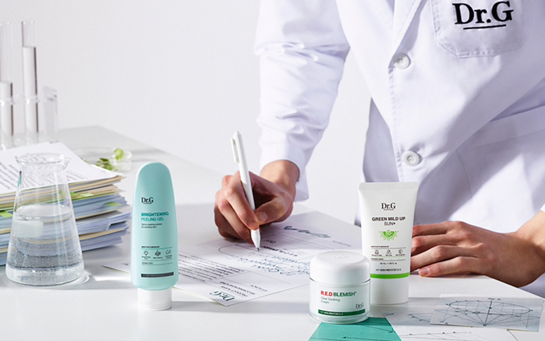

클리닉에서 태어난 피부과 아름다운 피부를 위한 3스텝 케어

한국의 스킨케어 루틴은 준비, 진정, 보호의 세 단계로 구성됩니다. 닥터지 서울 피부과 내부에 그 시퀀스를 구축했는데, 표면을 깨끗하게 하면 다음 층이 피부에 닿고, 진정되면 장벽이 편안하게 유지되고, 미네랄 자외선 차단제는 하루 종일 그 결과를 유지하기 때문에 그 순서대로 진행됩니다. 3단계 중 2단계는 아침저녁으로 진행되고, 1단계는 일주일에 1~2회 진행되며 전체 소요시간은 2분 정도이다. 다른 것을 추가하기 전에 한 달 동안 보관하면 피부가 어느 단계에 반응하는지 알 수 있습니다.
01.
한국 스킨케어 루틴 3단계
한국의 스킨케어 루틴은 3단계로 구성되어 있으며 클렌징 후 진행됩니다. 죽은 세포를 들어 올리는 준비, 진정 및 수분 공급, 미네랄 필터로 보호막 보호. 닥터지에서는 피부과 전문의가 진료소에서 일하는 순서인 P.S.P 또는 각보자(각보자)로 순서를 가르칩니다.
한국의 스킨케어는 결코 고정된 10단계 공식이 아니었습니다. K뷰티 전문가 박사라정이 말했다. 인기 그날의 피부 상태에 따라 3가지 제품부터 15가지 제품까지 레이어링하는 습관입니다. 클리블랜드 클리닉의 피부과 의사인 Alok Vij는 간략하게 설명합니다. 누군가에게 10단계를 주면 그 사람은 안정적으로 2~3단계를 수행할 것입니다. 일관성은 측정된 부분입니다. 연구자가 참여한 무작위 무작위 시험에서 하루에 두 번 순한 클렌저와 보습제를 사용한 사람들은 클렌저만 사용한 사람들보다 2주 동안 임상 건조 점수가 훨씬 더 많이 개선되었습니다. [1].
주문이 보류되는 이유:
- 먼저 준비하세요: 표면이 깨끗해지면 뒤따르는 크림이 피부에 닿지 않고 피부에 닿을 수 있습니다.
- 두 번째 진정: 편안하고 수분을 공급하는 장벽은 나머지 루틴의 기초입니다.
- 마지막 보호: 자외선 차단 필름은 최상층 역할을 하므로 그 위에 아무것도 올라가지 않습니다.
전체 표를 보려면 스와이프하세요 →
 |
 |
 |
|
| 기준 | 1단계: 준비 | 2단계: 진정시키기 | 3단계: 보호 |
|---|---|---|---|
| 제품 | 브라이트닝 필링젤 | R.E.D 블레미쉬 클리어 수딩 크림 | 그린 드래곤 선 플러스 SPF50+ PA++++ |
| 이익 | 죽은 피부 세포를 제거하여 다음 층이 피부에 닿도록 합니다. | 눈에 보이는 붉은기를 진정시키고 장벽에 수분을 잡아줍니다 | 반응하는 피부를 위한 데일리 자외선 차단 |
| 재료 | 면 셀룰로오스, 비산성 | 10 시카 콤플렉스 | 100% 순수 미네랄 UV 필터: 엑토인 D가 함유된 산화아연 |
| 조직 | 린스오프 필링 젤 | 반투명 쿨링 젤 크림 | 끈적임 없이 미네랄 선케어 |
| 빈도 | 일주일에 한두 번 | 아침과 저녁 | 매일 아침 |
준비하기 전에 먼저 부드러운 클렌징이 먼저 이루어지며, 그 뒤에는 3단계가 이어집니다.
02.
1단계: 준비
준비는 다른 일이 진행되기 전에 죽은 세포를 들어 올리는 것을 의미합니다. 그만큼 브라이트닝 필링젤 이에 대한 닥터지 제품은 비산성 면 셀룰로오스 젤로 축축한 피부에 약 1분간 마사지한 후 뭉쳐서 씻어낼 때까지 사용합니다. 일주일에 한두 번이면 충분합니다.
닥터지가 공식화한다. 브라이트닝 필링젤 산이 없기 때문에 반응성 피부는 매주 각질이 제거될 수 있습니다. 이 작용은 기계적이며 세면대에서 1분도 채 걸리지 않습니다. 브랜드의 약칭은 다음과 같습니다. 긁힘 없이 문지르기. 손에 닿자마자 피부가 더욱 매끄러워지고, 뒤이어 나오는 크림이 고르게 퍼집니다.
임상적으로 입증된 결과: 브라이트닝 필링젤
한 번 사용하면 표면이 깨끗해집니다.
한 번 사용 후에도 피부가 더욱 부드러워졌습니다.
젤을 씻어낸 후에도 물이 남아있습니다.
*닥터지 임상 테스트 데이터, 파일.
03.
2단계: 진정시키기
진정은 하루에 두 번, 매일 반복하는 단계입니다. 그만큼 R.E.D 블레미쉬 클리어 수딩 크림 시카가 주도하는 10가지 상호 보완적인 진정 활성 성분인 10 시카 콤플렉스가 함유된 반투명 쿨링 젤 크림으로 주간 각질 제거와 매일의 태양 사이에서 장벽을 편안하게 유지해줍니다.
피부가 완전히 건조된 상태가 아닌 아직 촉촉한 상태에서 누르십시오. 이것이 바로 한국의 3초 법칙입니다. 보습제는 이미 표면의 수분을 묶어두기 때문에 젖은 얼굴에 바르는 크림은 더 많은 수분을 유지하게 해줍니다. 시원하게 착지하고 빠르게 가라앉습니다.이것이 바로 밤의 마지막 레이어와 마찬가지로 아침의 자외선 차단제 아래에서도 잘 작동하는 이유입니다. 닥터지는 눈에 보이는 붉은기를 가라앉히기 위해 시카를 중심으로 포뮬러를 만들었습니다.
임상적으로 입증된 결과: R.E.D 블레미쉬 클리어 수딩 크림
몇 주 동안 하루에 두 번 사용하면 눈에 보이는 반응성이 감소합니다.
접촉 시 느끼는 피부 온도의 저하.
적용 후 오랜 시간 동안 장벽에 수분이 유지됩니다.
*닥터지 임상 테스트 데이터, 파일.
또한 읽어보세요 10 시카 콤플렉스, 설명
04.
3단계: 보호
Protect는 아침을 마감합니다. 그린 드래곤 선 플러스 SPF50+ PA++++ Broad Spectrum SPF 50+에는 100% 순수 미네랄 UV 필터, 산화아연과 Ectoin D가 결합되어 민감한 피부에도 순한 것으로 임상적으로 입증되었습니다. 루틴의 마지막 단계로 진정 크림 위에 발라줍니다.
PA++++는 한국 기준 최고 UVA 등급으로, 동일한 튜브에 US Broad Spectrum 표시와 함께 인쇄되어 있습니다. 닥터지의 공식으로 일상의 노출을 보호합니다. 7가지 민감성 피부 테스트, 소아 테스트부터 시술 후 테스트까지, 끈적임보다는 보송한 마무리감을 보여줍니다.
사용방법
- 언제: 매일 아침 마지막 단계에서 진정 크림을 바른 후.
- 어떻게: 얼굴, 목, 귀에 균일하게 바르고 문지르지 않고 눌러줍니다.
- 어디: 일광이 닿는 곳이면 어디든, 실내일도 포함됩니다.
또한 읽어보세요 매일 자외선을 차단하는 최고의 얼굴용 자외선 차단제
05.
피부타입에 맞게 조절하는 방법
세 단계는 피부 타입에 관계없이 동일하게 유지됩니다. 변화하는 것은 얼마나 자주 준비하고 진정 단계에 얼마나 겹쳐 놓는가입니다. 닥터지 루틴은 반응하는 피부를 중심으로 설계되었습니다. 그래서 젤은 비산성, 크림은 시카 베이스, 선케어는 100% 미네랄입니다.
| 건성 피부 | 일주일에 한 번씩 준비하고, R.E.D 블레미쉬 클리어 수딩 크림 아침저녁으로 피부가 아직 축축한 상태일 때 사용하세요. |
|---|---|
| 지성 또는 복합성 피부 | 젤-크림 질감은 필요한 유일한 보습제로 충분히 가볍습니다. 일주일에 두 번 준비하면 기름진 표면에 적합합니다. |
| 민감성 또는 반응성 피부 | 한 달 동안 3단계를 유지한 후 무언가를 추가하고, 얼굴이 뜨거워지는 날에는 쿨링 크림이 효과를 발휘하도록 하세요. |
| 여드름이 나는 피부 | 주 1회 무산성 각질 제거, 아침 저녁 젤 크림, 매일 미네랄 선케어. |
| 피부가 따끔거리는 일주일 | Soothe and Protect를 사용하고 피부가 안정되면 준비 백업을 선택하세요. |
06.
루틴 쇼핑하기
준비, 달래기, 보호: 의사의 세 가지 단계를 일상적인 순서로 진행합니다.
- 1단계. 준비 – 브라이트닝 필링젤: 일주일에 한두 번.
- 2단계. 진정시키기 – R.E.D 블레미쉬 클리어 수딩 크림: 아침, 저녁.
- 3단계. 보호 – 컷아웃 선 플러스 SPF50+ PA++++: 매일 아침.


07.
메모 및 출처
*닥터지 임상 테스트 데이터, 파일.
[1] Kim et al., 2020: 연구자 맹검 무작위 임상 시험, 중등도에서 중증 건성 피부를 가진 참가자 52명, 2주간 1일 2회 사용; 테스트한 클렌저와 보습제는 닥터지 제품이 아니었습니다.
동료 검토 연구
- 김 S, Ly BK, 하 JH, 카슨 KA, 호킨스 S, 강 S, Chien AL. 일관된 피부 관리 요법은 건조한 인간 피부의 객관적이고 주관적인 개선으로 이어집니다. 연구자가 맹검한 무작위 임상 시험. 피부과 치료 저널. 2020. PMCID PMC7529700
언론 및 업계 보도
- 인기, "전문가들이 생각하는 한국 스킨케어 10단계 루틴", Iman Balagam 작성, 2026년 2월 10일.
- 클리블랜드 클리닉 건강 필수품, "한국의 피부 관리 루틴: 당신이 알아야 할 것", Dr. Alok Vij, MD, 2023년 11월 10일.
브랜드 및 회사 출처
- 닥터지 임상 테스트 데이터, 파일.